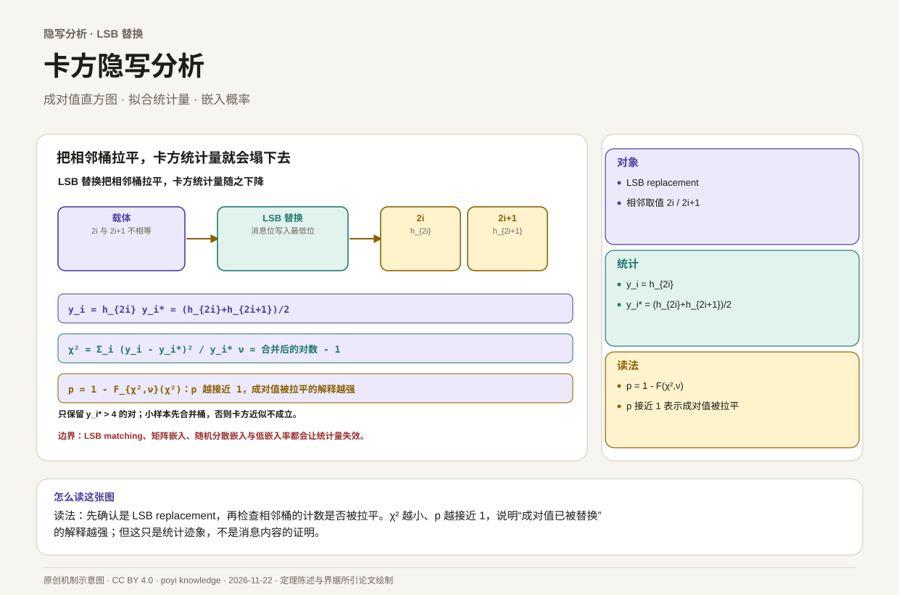
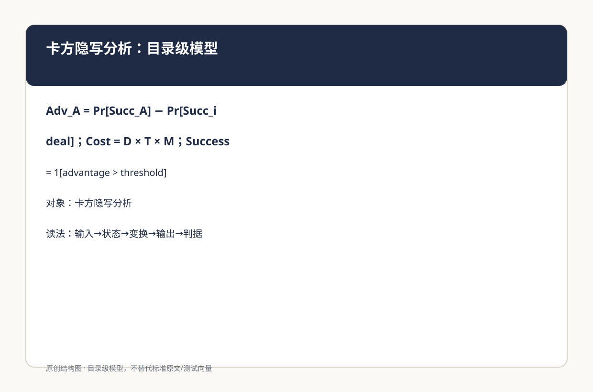

原理与机制
攻击：卡方隐写分析（Chi-Square Steganalysis）。### 成对值的直方图
LSB replacement 把每个样本的最低比特替换为消息位。若消息位近似随机，原本落在 2i 与 2i+1 两个相邻取值的样本会互相混合；嵌入率越高，两个桶的计数越接近相等。把第 i 对的观测计数记为 h_{2i}、h_{2i+1}，零假设下的期望为 y_i^* = (h_{2i} + h_{2i+1}) / 2。### 卡方统计量
以 y_i = h_{2i} 为观测值，计算
χ² = Σ_i (y_i - y_i^)^2 / y_i^。只保留 y_i^* > 4 的对；若相邻桶计数太少，要先合并，并把自由度相应减一。自由度 ν 等于合并后的对数减一。这个统计量衡量的是“观测到的偶数桶计数”与“成对平均后的期望”之间的偏差。在原论文的检验里，p = 1 - F_{χ²,ν}(χ²)，其中 F 是卡方分布的累积分布函数。χ² 越小，p 越接近 1，表示“成对值已被拉平”的解释越强；χ² 很大时 p 接近 0。这个 p 不是“隐藏消息内容”的概率，只是 LSB replacement 假设下的拟合程度。逐窗扫描可以估计顺序嵌入的结束位置。

为什么重要
自然图像的最低比特并不独立；相邻灰度或 DCT 系数对通常不相等。LSB 替换把一对值变成可交换的桶，统计上的“成对相等”因此成为可检测的痕迹。它不需要知道密钥或消息内容，只需要直方图。### 与视觉攻击的分工
位平面视觉攻击靠人眼观察 LSB 平面的结构；卡方攻击把同一现象变成可重复的统计量。两者都针对朴素的 LSB replacement，不等价于对所有隐写方案都有效。### 对隐写设计的含义
矩阵嵌入、F5、湿纸编码、扩频和自适应嵌入会打乱成对值关系；随机分散嵌入会让固定窗口的卡方统计失去位置信息。设计者必须让嵌入修改的统计分布接近载体，而不是只把消息位写进 LSB。
应用与实例
1.取得可疑载体，记录格式、量化表、色彩空间和重采样历史。2.按取值对建立直方图；对 DCT 系数按相邻量化值配对，对索引图像按调色板顺序配对。3.合并期望计数过小的桶，计算 χ² 与 ν。4.用 p = 1 - F(χ²,ν) 判断“成对值被拉平”的强度，并对图像做滑窗扫描定位可能的嵌入区间。5.用已知载体、已知嵌入器和不同嵌入率做校准；报告只能写“存在 LSB replacement 的统计迹象”，不能直接写“提取到消息”。### 工具位置
Stegdetect 把卡方、RS 分析等测试组合成候选筛选；卡方负责快速筛出成对值异常，后续仍要人工或专用工具验证。

边界与攻击面
1.非 LSB replacement：LSB matching、矩阵嵌入、F5、湿纸编码等不保证成对值相等。2.随机分散嵌入：固定窗口的统计被稀释，原版顺序扫描可能找不到明显区间。3.低嵌入率：少量修改淹没在载体天然噪声中。4.载体本身成对值接近相等（合成图、调色板图、强量化图），会产生高 p 的假阳性。5.消息位不随机，或嵌入器做了统计补偿。6.经过有损重压缩、裁剪、缩放或滤波，痕迹被破坏。卡方检验的是直方图拟合，不是密码分析；高 p 不能证明存在秘密消息，低 p 也不能证明没有。它的结论依赖载体、嵌入器和窗口参数，必须与校准样本一起报告。
历史与背景
Westfeld 与 Pfitzmann 在 1999 年系统化了对 EzStego、Jsteg、Steganos、S-Tools 等工具的攻击，把 LSB 平面的视觉异常与成对值卡方检验结合起来。论文强调：LSB 并非天然随机，朴素替换会留下统计结构。### 后续发展
Provos 与 Honeyman 在 2002 年把卡方等检测器放进互联网图像扫描框架，并指出统计检测只能给出候选，不能替代密钥或消息提取。后来的扩展卡方、RS 分析、校准和机器学习方法继续处理随机分散嵌入与低嵌入率。
逐步示例与核验
形式模型与复算步骤
[\mathrm{Adv}^{\mathrm{attack}}_A(\lambda)=\Pr[\mathrm{Game}_A(\lambda)=1]-\frac12]
卡方隐写分析的公开参数、密钥/随机数与消息；变量说明：λ 安全参数；Game 把攻击目标写成挑战-响应游戏。1.定义挑战与获胜条件。2.给攻击者 oracle 访问。3.计算优势并与目标界比较。边界：公式只覆盖已登记的参数与假设；参数取值、标准版本和实现细节仍以来源为准。
参考出处
- Wikipedia search entry for 卡方隐写分析. https://zh.wikipedia.org/w/index.php?search=%E5%8D%A1%E6%96%B9%E9%9A%90%E5%86%99%E5%88%86%E6%9E%90
- Handbook of Applied Cryptography (Menezes, van Oorschot, Vanstone). https://www.cacr.math.uwaterloo.ca/hac/